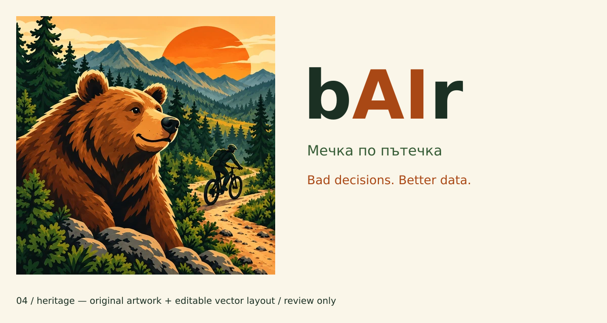
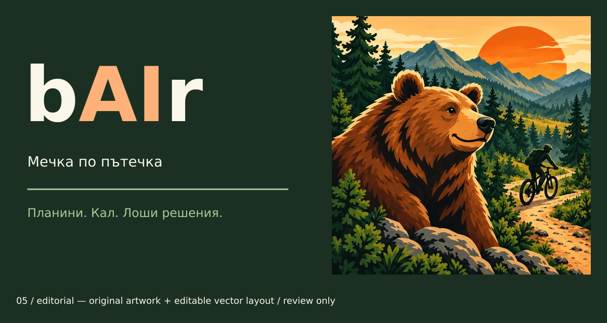
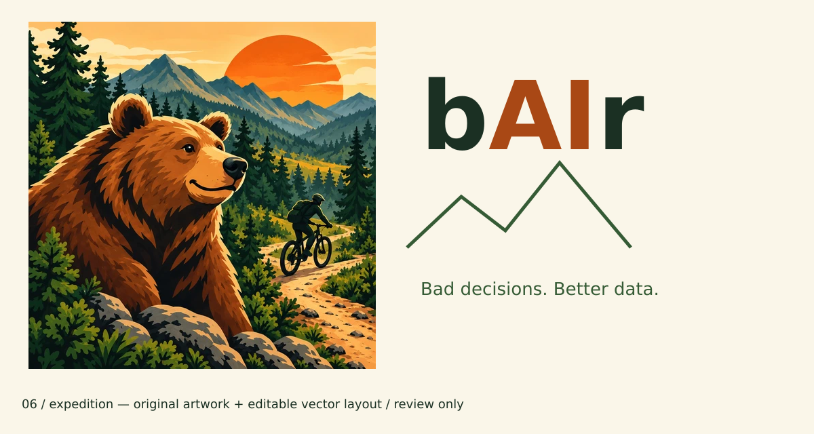
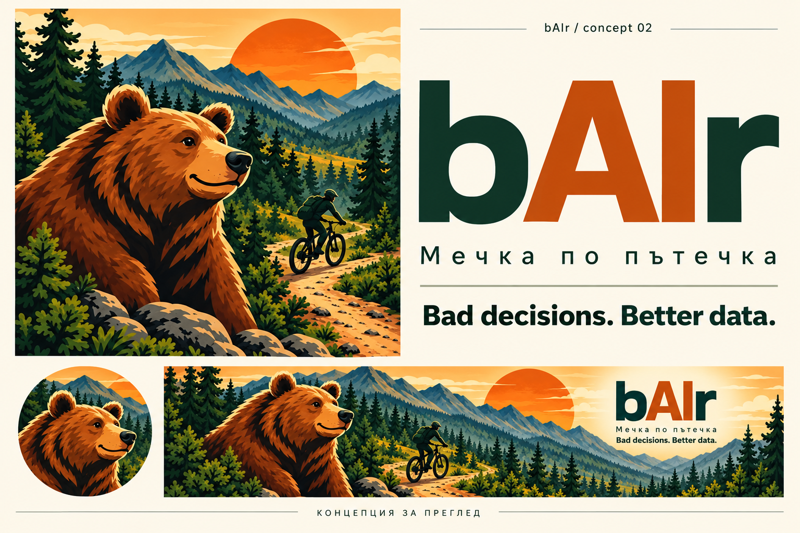

Ревизия след обратна връзка: по-зрял outdoor характер. Нова мечка не се въвежда. Концепции 01–03 са отхвърлена посока.
В тези SVG оригиналната илюстрация е вграден PNG, а надписите, цветовете и оформлението са редактируеми вектори. Не е финална векторизация на мечката.



Името/марката не са проверени. Няма промени по приложението. Старите launcher/YouTube шаблони с детската мечка не са актуалното предложение.
